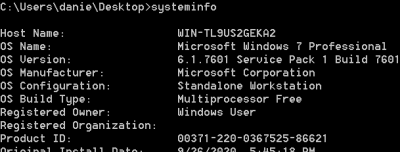

search exploit for Windows
site:
https://github.com/bitsadmin/wesngWindows Exploit Suggester New Generation
This is a tool for identifying missing patches on the Windows target which may indicate possible vulnerabilities.
The tool takes the output from the ‘systeminfo’ command and compares the target’s patch levels (hotfixes installed) against the latest version of the vulnerability database.
It use the following databases:
• Microsoft Security Bulletin Data: KBs for older systems
• MSRC: The Microsoft Security Update API of the Microsoft Security Response Center (MSRC): Standard source of information for modern Microsoft Updates
• NIST National Vulnerability Database (NVD): Complement vulnerabilities with Exploit-DB links
These are combined into a single .csv file which is compressed(definitions.zip) and hosted in this GitHub repository.
1. Install
root@kali:/# cd /home/kali/bin
root@kali:/home/kali/bin# git clone https://github.com/bitsadmin/wesng.git
root@kali:/home/kali/bin# cd wesng
2. update the database that we will use:
root@kali:/home/kali/bin/wesng# python wes.py --update
root@kali:/home/kali/bin/wesng# ls
3. retrieve the system information from the target machine and run wes.py:
◇
systeminfo <---- BETTER
 Copy the results in a txt file that we will give to wesng
root@kali:/home/kali/bin/wesng# cat /home/kali/Desktop/sysinfo.txt #contnent of the file
run wes.py
root@kali:/home/kali/bin/wesng# python wes.py /home/kali/Desktop/sysinfo.txt |& tee /home/kali/Desktop/outputWes.txt #better
or
root@kali:/home/kali/bin/wesng# python wes.py /home/kali/Desktop/sysinfo.txt --output /home/kali/Desktop/outputWes2.txt
◇
wmi KB hotfixes If we’re unable to read the hotfixes installed from the "systeminfo" command then we can also try using the WMI command-line (WMIC) utility
run wes.py with the option --patches followed by the KB hotfixes found with wmic
python wes.py /home/kali/Desktop/sysinfo.txt --patches KB2534111 KB2999226 KB3004394 KB976902 |& tee /home/kali/Desktop/outputWes.txt
5. We can search informations for the CVE here:
https://www.securityfocus.com/bidTo know other possible commands of wesng:
root@kali:/home/kali/bin/wesng# python wes.py
OPTIONS:
--impact "Remote Code Execution" → filter output for remote execution vulnerability
--impact “Elevation of Privilege” → filter output for privilege escalation vulnerability